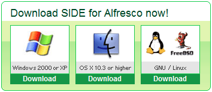

Blue Studio Un ensemble d'outils graphiques pour produire des applications Alfresco robustes et performantes
Blue Studio est une initiative open source pour aider les organisations à construire, maintenir et gérer leur système d'information dans le temps.
Présentation
Fonctionnalités
Blue Studio couvre les fonctions suivantes :
SIDE Alfresco Edition fonctionne avec Alfresco Enterprise Edition :
- Alfresco 4.x EE
- Alfresco 3.4.6, 3.4.7, 3.4.8, 3.4.9, 3.4.10 and 3.4.11
- Alfresco 3.3.3
- Alfresco 3.2r
Elle fonctionne aussi avec Alfresco Community :
- Alfresco 4.0.d
- Alfresco 3.4.d
- Alfresco 3.2r2
Download
Ressources
Captures d'écran
Vidéo
SIDE is a set of graphical tool really very easy to use.
The following videos will show you SIDE for Alfresco in action. They will help you to use the SIDE tools efficiently:
- Data modeling
- Form modeling
- View modeling
- Portal modeling
- Workflow modeling
The following videos will show you SIDE for Alfresco in action. They will help you to use the SIDE tools as well.
Data Modeling
This model enables you to describe content types, properties and relationships with each other.From this data model, SIDE generates for your ECM software the required configuration files so it knows how to store your content.
More videos on data modeling...Form Modeling
This model helps you to design the way you want to input data into your ECM repository. SIDE provides out of the box a generator for Alfresco but others generators are on the way. You could even create your own generators from these models.You can also design search forms and choose the search operators you want the user to be able to use.
More videos on form modeling...View Modeling
This model enables you to choose the attributes you want to get when selecting a content type. This view may be a set of data (JSON), a complete widget you can integrate directly into your application or a component smoothly integrted into Alfresco Share Document Library (list page or detail page)
More videos on view modeling...Portal Modeling
This model enables you to design the overwhole structure of your ECM application. It allows you to aggregate views and forms (input and search forms) you create previously with other SIDE modelers.More videos on portal modeling...
Workflow Modeling
This model enables you to design simple and complex workflows very quickly. SIDE generates all the artefacts (Content model, Task forms, jPDL, ...) required by Alfresco and jBPM. SIDE modeler enables you to build paperless procedures by agregating document preview, data form to update metadata about the document and workflow form to enter data about the process.More videos on workflow modeling...
SIDE-Labs Channel
All these videos are available in the "Featured Videos" section of this site or on the following channel
Démonstration
Aucune ressource n'est disponible pour le moment.